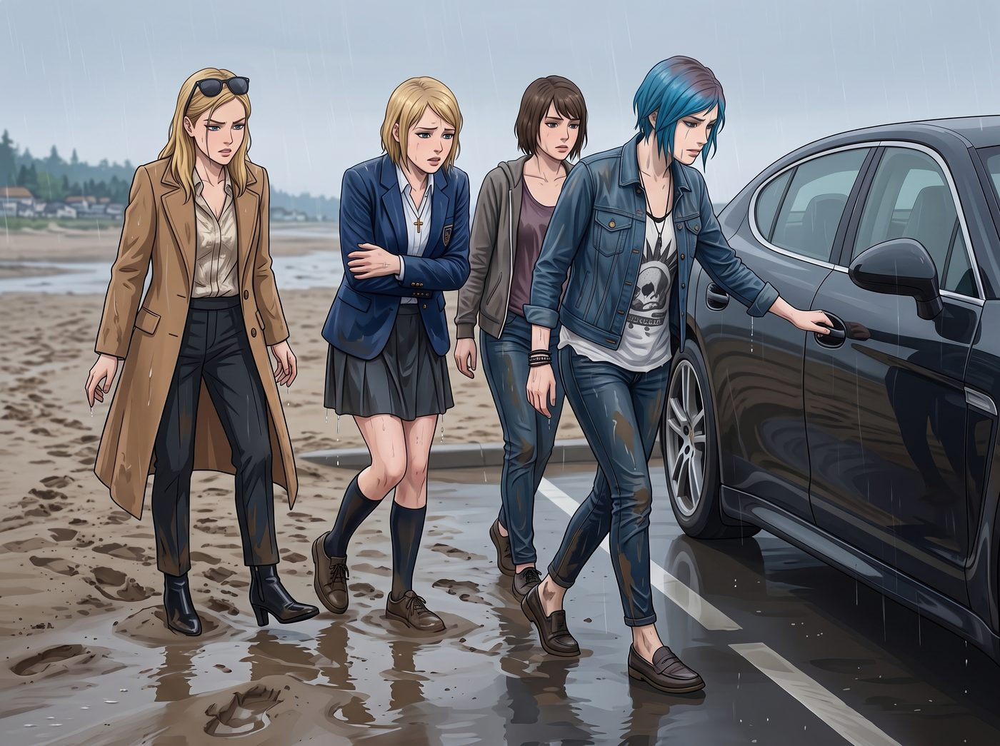

車內取暖


四隻落湯雞踩著濕軟的泥沙，帶著一路「咕唧咕唧」的水聲狼狽地挪回了停在硬地上的保時捷 Panamera 旁。
「快……開門……」Victoria 抱著雙臂，整個人抖得像一片在暴風雨中狂顫的秋葉。她那件吸飽了太平洋海水的名貴羊絨風衣沉得像灌了鉛，下擺正淅淅瀝瀝地往下滴著水，原本精緻的金色捲髮此時像幾縷海草一樣黏在臉頰兩側，「我的十個腳趾……已經徹底失去痛覺了……」
Chloe 倒是滿臉滿不在乎的興奮，儘管她嘴唇凍得微微發紫，牙齒也在不受控制地「咯咯」打戰。見Victoria用指紋解鎖了車門，Chloe一把拉開所有車門：「上車上車！全體進艙！動作快點，別把冷風放進去！」
四個人幾乎是以滾動的方式跌進了車廂內部。
Victoria 坐進駕駛座的第一秒，顫抖著伸出發白的手指，連按了三下中控台的紅色點火鍵。雙渦輪增壓 V8 發動機瞬間轟鳴，伴隨著發動機的運轉，Victoria 以最快的手速把分區空調旋鈕直接擰到了最極限的 32°C，並同時按下了前後排四個座椅的最高檔「座椅加熱」按鈕。
「呼——」
滾燙的熱風從十幾個出風口瘋狂呼嘯而出，混合著四人身上潮濕的海水味、泥沙味和羊毛浸濕後的特殊氣味，瞬間把這台價值不菲的豪華轎跑內部變成了一個封閉式「移動桑拿房」。
後排座椅的加熱線圈迅速升溫，Max 癱坐在柔軟的真皮皮椅上，感覺一股強烈的暖流直接透過濕透的牛仔褲熨燙在後背和臀部，舒服得長長發出了一聲近乎融化的嘆息：「啊……我覺得我活過來了……」
「先別急著升天，考菲爾德。」坐在副駕駛的 Chloe 已經把自己那件濕淋淋的朋克背心脫了下來，隨手扔在腳墊上，整個人湊在出風口前，張開雙手像烤火一樣烘著掌心，一邊享受著熱風一邊發出怪叫，「蔡斯小姐，不得不說，妳這台高級大平層的暖風系統簡直能用來烤披薩。我的骨髓都在解凍！」
「閉嘴，Price……把妳那件滴水的破布拿開！」Victoria 縮在駕駛座裡，把濕透的外套扒了下來扔在扶手箱上，身上只剩下一件單薄的絲綢襯衫。她雙手死死握著帶加熱功能的方向盤汲取熱量，一邊打著冷顫一邊咬牙切齒，「這套全粒面真皮內飾……要是因為吸收了你們身上的海水發霉變形……我回西雅圖就把你們全告上破產法庭……」
就在這時，後排傳來了清脆的保溫瓶旋蓋聲。
「大家，先喝點熱的暖暖胃吧。」
Kate 坐在 Max 身旁，雖然褲管也全濕了，但神情依然沉靜溫柔。她從隨身帆布包裡掏出了那個一直保護得完好無損的特大號不銹鋼保溫壺，旋開蓋子當作小茶杯。
一股濃郁醇厚的蒸汽混雜著肉桂、生薑與洋甘菊的甜香在車廂內迅速瀰漫開來，瞬間壓過了海水和泥沙的潮氣。
Kate 小心地把倒滿滾燙熱茶的蓋子遞到了前排：「Victoria，先給妳，妳剛才凍得最厲害。」
Victoria 愣了一下。她看著那隻冒著熱氣的塑膠小杯子，原本準備好的一肚子刻薄抱怨突然卡在喉嚨裡。她有些彆扭地抿了抿嘴唇，接過杯子，雙手捧著溫熱的杯壁，小口抿了一口滾燙的薑茶。
一股辛辣而溫暖的熱流順著食道滑進胃裡，驅散了最後一絲寒意。
「……煮得太甜了，糖分超標。」Victoria 低頭盯著杯子，聲音低了幾分，但握著杯子的手指卻完全沒有鬆開的意思。
「有的喝就不錯了，大少奶奶！」Chloe 大笑著轉過身，直接從 Kate 手裡搶過保溫壺本體，也不管燙不燙，對著壺嘴就狠狠灌了一大口，隨後被燙得直吐舌頭，「哈——！爽！感覺內臟都被點著了！Maxine，給！」
Max 接過保溫壺，也痛痛快快地喝了幾大口，隨後遞回給 Kate。
四個人就這樣擠在狹小、悶熱、甚至瀰漫著水汽的車廂裡。車窗玻璃因為內外溫差迅速結上了一層厚厚的白色霧氣，將車外呼嘯的太平洋夜風與漆黑的海岸徹底隔絕開來。
Chloe 嚼著薑茶裡的肉桂片，忽然伸出手指在副駕駛起霧的車窗上隨手畫了一個巨大的歪歪扭扭的笑臉，旁邊歪歪斜斜寫著「全員生還」。
「喂！Price！別在我的玻璃上留下手印！」Victoria 象徵性地抗議了一聲，但握著方向盤的手卻沒有動，甚至嘴角在熱風的烘烤下微微揚起了一個極難察覺的弧度。
後排的 Max 悄悄舉起掛在胸前、用乾毛巾擦乾的相機，沒有開閃光燈，只是在車內柔和的儀表盤橘色光芒中，按下了快門。
車廂內暖意融融，四個人的笑鬧與抱怨聲伴隨著引擎的低吼，在加農海灘的夜色中平穩地駛向歸途。